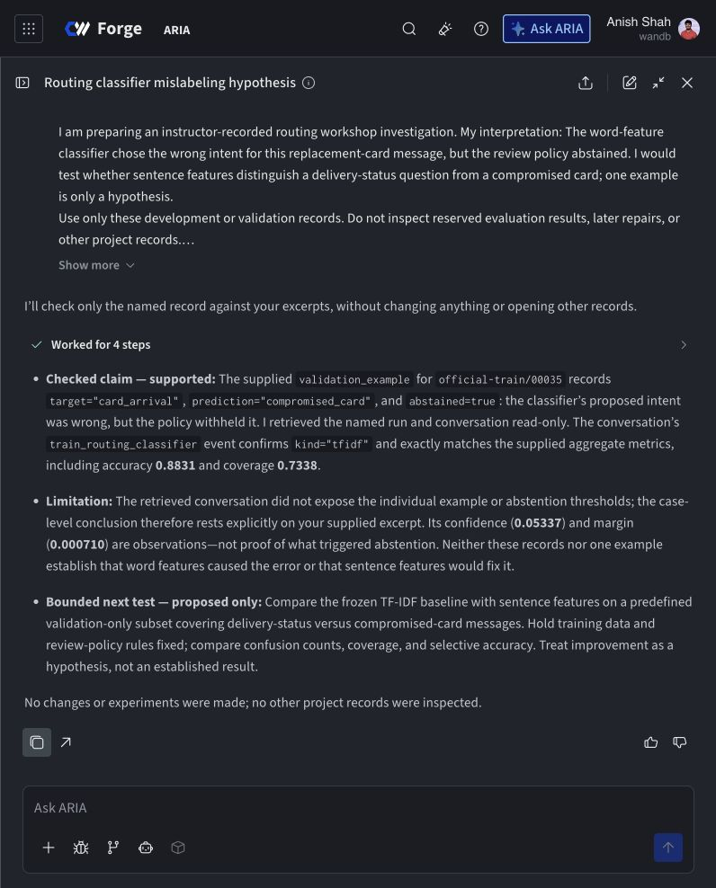
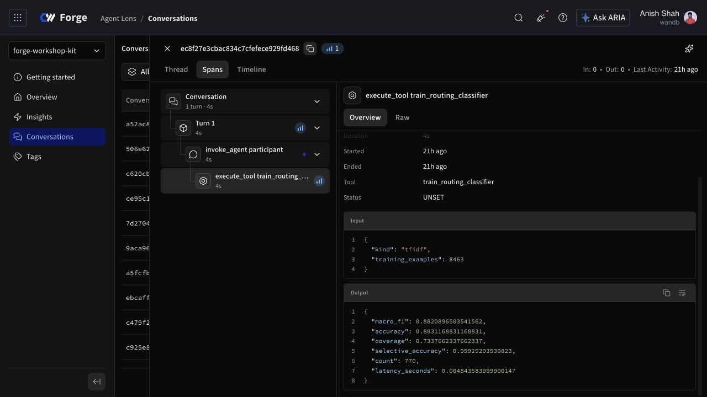

Request Routing / Investigate this result
Recorded instructor investigation. These are saved instructor records, not the outcome of an unexecuted participant edit.
Exact run and conversation URLs plus a saved validation-row excerpt; no native attachment. ARIA retrieved the named run and its train_routing_classifier event read-only and confirmed aggregate metrics. The individual request and abstention result were available only in the supplied excerpt; no case-level native readback is claimed.
Open the actual ARIA conversation · Check the supplied source values offline
Exact submitted prompt
I am preparing an instructor-recorded routing workshop investigation. My interpretation: The word-feature classifier chose the wrong intent for this replacement-card message, but the review policy abstained. I would test whether sentence features distinguish a delivery-status question from a compromised card; one example is only a hypothesis.
Use only these development or validation records. Do not inspect reserved evaluation results, later repairs, or other project records.
Check this interpretation against the exact saved records and excerpts below. Identify one supporting or contradicting observation and cite the record, field, or event. Separate observations from possible causes; state missing evidence. Do not change code or settings, launch experiments, update project memory, or create automations. Analysis only.
Records: [{"stage_id":"ec8f27e3cbac834c7cfefece929fd468","stage_name":"routing/baseline/tfidf","trace_url":"https://forge.coreweave.com/agent-lens/wandb/forge-workshop-kit/conversations/ec8f27e3cbac834c7cfefece929fd468","run_url":"https://forge.coreweave.com/wandb/wandb/forge-workshop-kit/runs/ec8f27e3cbac834c7cfefece929fd468"}]
Saved evidence excerpts: {"validation_example":{"case_id":"official-train/00035","text":"Can I get an update on my replacement card?","target":"card_arrival","prediction":"compromised_card","confidence":0.053366252213165544,"runner_up":"order_physical_card","margin":0.0007096001389567327,"abstained":true,"split":"validation","latency_seconds":6.2903688310391525e-06,"inference_cost_usd":0.0,"cost_note":"Local classifier inference; notebook compute billed separately."},"metrics":{"macro_f1":0.8820896503541562,"accuracy":0.8831168831168831,"coverage":0.7337662337662337,"selective_accuracy":0.95929203539823,"count":770,"latency_seconds":0.004843583999900147},"classifier_settings":{"kind":"tfidf","seed":17,"dataset":"90df5312b15a932e50c2c87a833de980ebb5fd9bdf9e86fa2336928c46e96129"}}
Give a concise response with one checked claim, one limitation, and one bounded next test. If you cannot read a linked record, say so and base any interpretation explicitly on the supplied excerpt.
Please retrieve the named records read-only if the available tools support it. If they do not, state that limitation. Keep the response under 220 words.Actual ARIA response
Instructor citation check
supported: The selected validation request had a wrong proposed intent, but the review policy abstained.
The saved validation row official-train/00035 has target card_arrival, prediction compromised_card, and abstained=true. Confidence is 0.053366252213165544 and margin is 0.0007096001389567327. The check uses this saved row; ARIA retrieved only aggregate metrics from the native conversation. The evidence does not establish that representation caused the error.
Open the checked record in Forge


- TF–IDF input
- Validation metrics